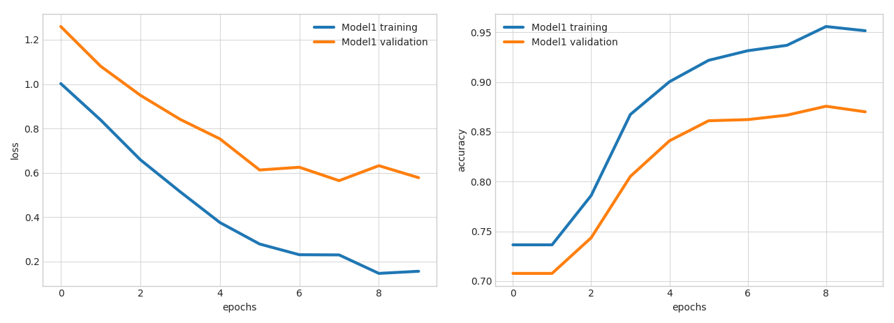

Getting Started
Introduction¶
Ludwig is a toolbox built on top of TensorFlow that allows to train and test deep learning models without the need to write code.
All you need to provide is a CSV file containing your data, a list of columns to use as inputs, and a list of columns to use as outputs, Ludwig will do the rest. Simple commands can be used to train models both locally and in a distributed way, and to use them to predict on new data.
A programmatic API is also available in order to use Ludwig from your python code. A suite of visualization tools allows you to analyze models' training and test performance and to compare them.
Ludwig is built with extensibility principles in mind and is based on data type abstractions, making it easy to add support for new data types as well as new model architectures.
It can be used by practitioners to quickly train and test deep learning models as well as by researchers to obtain strong baselines to compare against and have an experimentation setting that ensures comparability by performing standard data preprocessing and visualization.
Ludwig provides a set of model architectures that can be combined together to create an end-to-end model for a given use case. As an analogy, if deep learning libraries provide the building blocks to make your building, Ludwig provides the buildings to make your city, and you can chose among the available buildings or add your own building to the set of available ones.
The core design principles we baked into the toolbox are: - No coding required: no coding skills are required to train a model and use it for obtaining predictions. - Generality: a new data type-based approach to deep learning model design that makes the tool usable across many different use cases. - Flexibility: experienced users have extensive control over model building and training, while newcomers will find it easy to use. - Extensibility: easy to add new model architecture and new feature data types. - Understandability: deep learning model internals are often considered black boxes, but we provide standard visualizations to understand their performance and compare their predictions. - Open Source: Apache License 2.0
Installation¶
Ludwig's basic requirements are the following:
- tensorflow
- numpy
- pandas
- scipy
- scikit-learn
- Cython
- h5py
- tabulate
- tqdm
- PyYAML
- absl-py
Ludwig has been developed and tested with Python 3 in mind. If you don’t have Python 3 installed, install it by running:
sudo apt install python3 # on ubuntu
brew install python3 # on mac
You may want to use a virtual environment to maintain an isolated Python environment.
virtualenv -p python3 venv
In order to install Ludwig just run:
pip install ludwig
or install it by building the source code from the repository:
git clone git@github.com:uber/ludwig.git
cd ludwig
virtualenv -p python3 venv
source venv/bin/activate
pip install -r requirements.txt
python setup.py install
This will install only Ludwig-s basic requirements, different feature types require different dependencies. We divided them as different extras so that users could install only the ones they actually need.
Text features extra packages can be installed with pip install ludwig[text] and include:
- spacy
- bert-tensorflow
If you intend to use text features and want to use spaCy based language tokenizers, install language specific models with:
python -m spacy download <language_code>
More details in the User Guide.
Image features extra packages can be installed with pip install ludwig[image] and include:
- scikit-image
Audio features extra packages can be installed with pip install ludwig[audio] and include:
- soundfile
Visualization extra packages can be installed with pip install ludwig[viz] and include:
- matplotlib
- seaborn
Model serving extra packages can be installed with pip install ludwig[serve] and include:
- fastapi
- uvicorn
- pydantic
- python-multipart
Any combination of extra packages can be installed at the same time with pip install ludwig[extra1,extra2,...] like for instance pip install ludwig[text,viz].
The full set of dependencies can be installed with pip install ludwig[full].
Beware that the tensorflow package
contained in the requirements.txt file is
the CPU version. If you prefer to install the GPU
version, uninstall tensorflow and replace
it with tensorflow=gpu after having
installed ludwig, being careful at
matching the version ludwig requires, as shown in
requirements.txt.
If you want to train Ludwig models in a distributed way, you need to also install the horovod and the mpi4py packages.
Please follow the instructions on Horovod's repository to install it.
Basic Principles¶
Ludwig provides two main functionalities: training models and using them to predict. It is based on datatype abstraction, so that the same data preprocessing and postprocessing will be performed on different datasets that share data types and the same encoding and decoding models developed for one task can be reused for different tasks.
Training a model in Ludwig is pretty straightforward: you provide a CSV dataset and a model definition YAML file.
The model definition contains a list of input features and output features, all you have to do is specify names of the columns in the CSV that are inputs to your model alongside with their datatypes, and names of columns in the CSV that will be outputs, the target variables which the model will learn to predict. Ludwig will compose a deep learning model accordingly and train it for you.
Currently the available datatypes in Ludwig are:
- binary
- numerical
- category
- set
- bag
- sequence
- text
- timeseries
- image
- audio
- date
- h3
- vector
The model definition can contain additional information, in particular how to preprocess each column in the CSV, which encoder and decoder to use for each one, feature hyperparameters and training parameters. This allows ease of use for novices and flexibility for experts.
Training¶
For example, given a text classification dataset like the following:
| doc_text | class |
|---|---|
| Former president Barack Obama ... | politics |
| Juventus hired Cristiano Ronaldo ... | sport |
| LeBron James joins the Lakers ... | sport |
| ... | ... |
you want to learn a model that uses the content of the doc_text column as input to predict the values in the class column.
You can use the following model definition:
{input_features: [{name: doc_text, type: text}], output_features: [{name: class, type: category}]}
and start the training typing the following command in your console:
ludwig train --data_csv path/to/file.csv --model_definition "{input_features: [{name: doc_text, type: text}], output_features: [{name: class, type: category}]}"
where path/to/file.csv is the path to a UTF-8 encoded CSV file contaning the dataset in the previous table.
Ludwig will perform a random split of the data, preprocess it, build a WordCNN model (the default for text features) that decodes output classes through a softmax classifier, train the model on the training set until the accuracy on the validation set stops improving.
Training progress will be displayed in the console, but TensorBoard can also be used.
If you prefer to use an RNN encoder and increase the number of epochs you want the model to train for, all you have to do is to change the model definition to:
{input_features: [{name: doc_text, type: text, encoder: rnn}], output_features: [{name: class, type: category}], training: {epochs: 50}}
Refer to the User Guide to find out all the options available to you in the model definition and take a look at the Examples to see how you can use Ludwig for several different tasks.
After training, Ludwig will create a directory under results containing the trained model with its hyperparameters and summary statistics of the training process.
You can visualize them using one of the several visualization options available in the visualize tool, for instance:
ludwig visualize --visualization learning_curves --training_statistics path/to/training_statistics.json
The commands will display a graph that looks like the following, where you can see loss and accuracy as functions of train iteration number:

Several visualizations are available, please refer to Visualizations for more details.
Distributed Training¶
You can distribute the training of your models using Horovod, which allows to train on a single machine with multiple GPUs as well as on multiple machines with multiple GPUs. Refer to the User Guide for more details.
Predict¶
If you have new data and you want your previously trained model to predict target output values, you can type the following command in your console:
ludwig predict --data_csv path/to/data.csv --model_path /path/to/model
Running this command will return model predictions and some test performance statistics if the dataset contains ground truth information to compare to.
Those can be visualized by the visualize tool, which can also be used to compare performances and predictions of different models, for instance:
ludwig visualize --visualization compare_performance --test_statistics path/to/test_statistics_model_1.json path/to/test_statistics_model_2.json
will return a bar plot comparing the models on different measures:

A handy ludwig experiment command that performs training and prediction one after the other is also available.
Programmatic API¶
Ludwig also provides a simple programmatic API that allows you to train or load a model and use it to obtain predictions on new data:
from ludwig.api import LudwigModel
# train a model
model_definition = {...}
model = LudwigModel(model_definition)
train_stats = model.train(training_dataframe)
# or load a model
model = LudwigModel.load(model_path)
# obtain predictions
predictions = model.predict(test_dataframe)
model.close()
model_definition is a dictionary contaning
the same information of the YAML file.
More details are provided in the User Guide and in
the API documentation.
Extensibility¶
Ludwig is built from the ground up with extensibility in mind. It is easy to add an additional datatype that is not currently supported by adding a datatype-specific implementation of abstract classes which contain functions to preprocess the data, encode it, and decode it.
Furthermore, new models, with their own specific hyperparameters, can be easily added by implementing a class that accepts tensors (of a specific rank, depending of the datatype) as inputs and provides tensors as output. This encourages reuse and sharing new models with the community. Refer to the Developer Guide for further details.